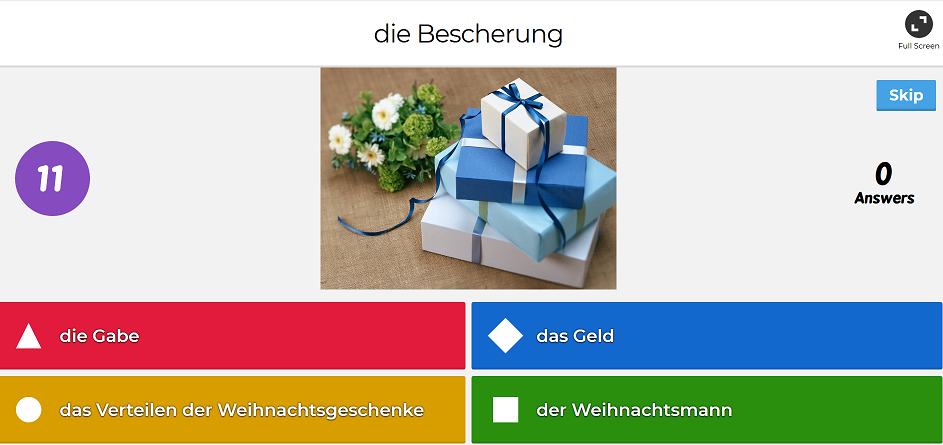
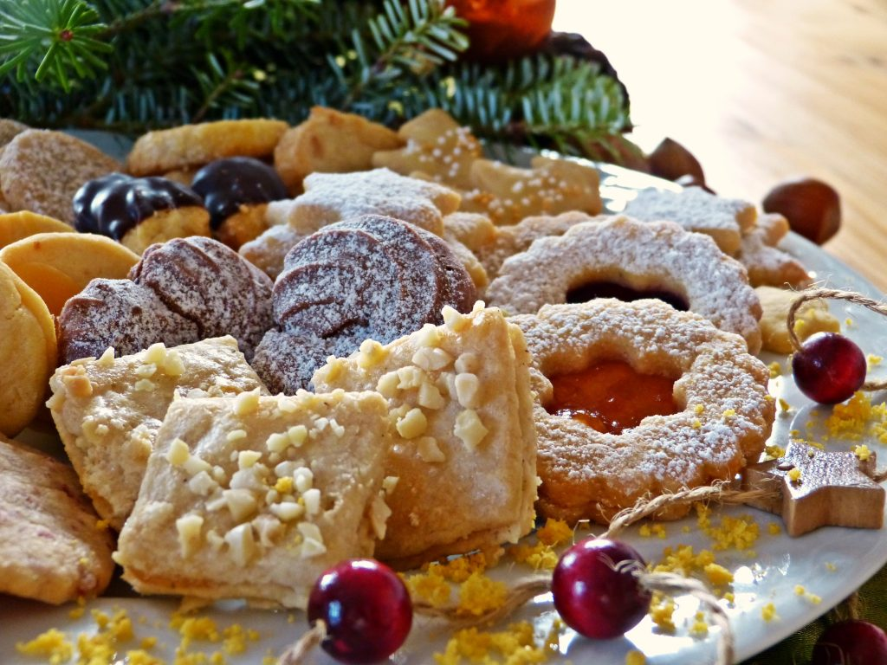
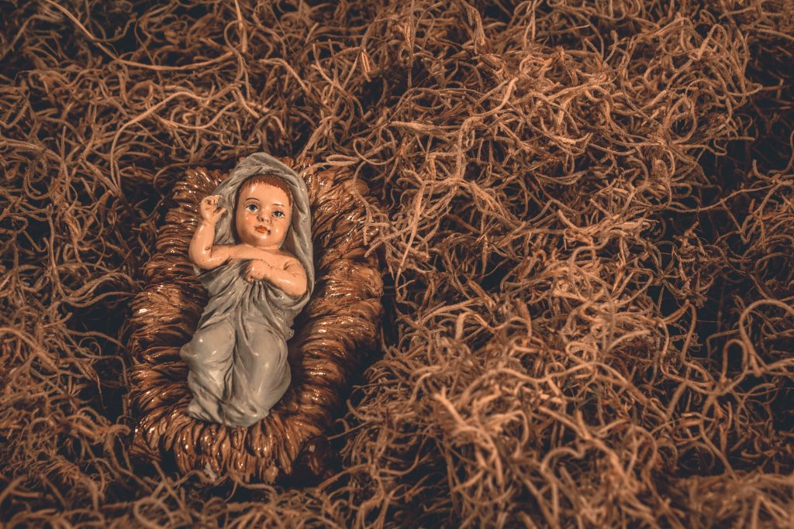

<?xml version="1.0" encoding="UTF-8"?><rss version="2.0"
	xmlns:content="http://purl.org/rss/1.0/modules/content/"
	xmlns:wfw="http://wellformedweb.org/CommentAPI/"
	xmlns:dc="http://purl.org/dc/elements/1.1/"
	xmlns:atom="http://www.w3.org/2005/Atom"
	xmlns:sy="http://purl.org/rss/1.0/modules/syndication/"
	xmlns:slash="http://purl.org/rss/1.0/modules/slash/"
	>

<channel>
	<title>Verstehen vom Hören &#8211; Prosty &#8211; Niemiecki!</title>
	<atom:link href="../../../../category/slownictwo/verstehen-vom-horen/feed/index.html" rel="self" type="application/rss+xml" />
	<link>https://prosty-niemiecki.pl</link>
	<description>Anna Przyrowska: blog o autorskiej metodzie nauki języka niemieckiego</description>
	<lastBuildDate>Thu, 09 Jan 2020 17:21:20 +0000</lastBuildDate>
	<language>pl-PL</language>
	<sy:updatePeriod>
	hourly	</sy:updatePeriod>
	<sy:updateFrequency>
	1	</sy:updateFrequency>
	<generator>https://wordpress.org/?v=6.3.1</generator>

<image>
	<url>../../../../wp-content/uploads/2018/10/cropped-indeks-32x32.png</url>
	<title>Verstehen vom Hören &#8211; Prosty &#8211; Niemiecki!</title>
	<link>https://prosty-niemiecki.pl</link>
	<width>32</width>
	<height>32</height>
</image> 
	<item>
		<title>Frohes Neujahr! O świętowaniu Nowego Roku</title>
		<link>../../../../slownictwo/neujahr-silvester/</link>
					<comments>../../../../slownictwo/neujahr-silvester/#respond</comments>
		
		<dc:creator><![CDATA[Anna Przyrowska]]></dc:creator>
		<pubDate>Tue, 01 Jan 2019 18:39:08 +0000</pubDate>
				<category><![CDATA[słownictwo]]></category>
		<category><![CDATA[tematy]]></category>
		<category><![CDATA[Verstehen vom Hören]]></category>
		<category><![CDATA[Gute Vorsätze]]></category>
		<category><![CDATA[Neujahr]]></category>
		<category><![CDATA[Neujahrsbräuche]]></category>
		<category><![CDATA[Noc sylwestrowa]]></category>
		<category><![CDATA[Nowy Rok]]></category>
		<category><![CDATA[Silvester]]></category>
		<category><![CDATA[Silvesternacht]]></category>
		<category><![CDATA[SilvesterQuiz]]></category>
		<category><![CDATA[Silvestertradition]]></category>
		<category><![CDATA[Silvestertraditionen]]></category>
		<guid isPermaLink="false">../../../../?p=1975</guid>

					<description><![CDATA[W tym wpisie zajmę się słownictwem i zwyczajami związanymi z Nowym Rokiem. Opiszę możliwości wprowadzenia nowych zwrotów związanych z świętowaniem]]></description>
										<content:encoded><![CDATA[
<p>W tym wpisie zajmę się słownictwem i zwyczajami związanymi z Nowym Rokiem. Opiszę możliwości wprowadzenia nowych zwrotów związanych z świętowaniem tego faktu za pomocą <strong>zabawy</strong> (kahoot.com) Następnie podam przykłady <strong>linków</strong>, gdzie można zobaczyć i przeczytać opis tego święta <strong>(visuel</strong>). Po tym wstępie będzie można już przejść do ćwiczeń  (<strong>audio</strong>) z ćwiczeniami. Podam parę przydatnych linków. Aby podsumować i sprawdzić swoją znajomość nowego słownictwa warto będzie zapoznać się ze stronami, gdzie ćwiczymy rozumienie ze słuchu (<strong>Verstehen vom Hören</strong>) oraz rozumienie z czytania (<strong>Verstehen vom Lesen</strong>)</p>


<h2 class="wp-block-heading" style="text-align:center">Das Neujahr/Nowy Rok</h2>


<h3 class="wp-block-heading">Spiel/Quiz</h3>


<ul><li>Forma zabawy jest najprzyjemniejsza, gdy można uczyć się w grupie. Ale nie tylko! Oto parę propozycji na stronie kahoot.com.</li></ul>


<ul><li><a rel="noreferrer noopener" aria-label="Silvester (opens in a new tab)" href="https://create.kahoot.it/details/silvester/5be8e9b8-1ce3-4df8-8b14-229992ece848" target="_blank">Silvester</a></li></ul>


<ul><li><a rel="noreferrer noopener" aria-label="Gute Vorsätze für 2018 (opens in a new tab)" href="https://create.kahoot.it/details/gute-vorsatze-fur-2018/e41141d4-d363-4899-ab9a-2b799ac119b2" target="_blank">Gute Vorsätze für 2018</a></li></ul>


<ul><li><a rel="noreferrer noopener" aria-label="Silvester Quiz 2018/2019 (opens in a new tab)" href="https://create.kahoot.it/details/kahoot-um-neujahr/13ee2229-9cec-401e-a3dd-68ef9d702baf" target="_blank">Silvester Quiz 2018/20</a></li></ul>


<p>Można oczywiście samemu stworzyć quiz. Nie jest to takie trudne, a zabawy moc. Zachęcam.  </p>


<h3 class="wp-block-heading"> visuel</h3>


<ul><li>Quiz <a rel="noreferrer noopener" aria-label="  Silvester und Neujahr  (opens in a new tab)" href="https://www.geo.de/geolino/quiz-ecke/14189-quiz-quiz-silvester-und-neujahr" target="_blank"> Silvester und Neujahr </a></li><li>Zehn deutsche <a rel="noreferrer noopener" aria-label="Silvestertraditionen  (opens in a new tab)" href="https://www.dw.com/de/10-deutsche-silvestertraditionen/a-36796020" target="_blank">Silvestertraditionen </a></li><li>Silvester- und <a rel="noreferrer noopener" aria-label="Neujahrsbräuche (opens in a new tab)" href="https://www.dw.com/de/silvester-und-neujahrsbr%C3%A4uche/a-19232060" target="_blank">Neujahrsbräuche</a></li><li>Das Silvester-<a rel="noreferrer noopener" aria-label="Quiz  (opens in a new tab)" href="https://www.dw.com/de/das-silvester-quiz/a-41123553" target="_blank">Quiz </a></li><li>Rote Dessous und Glücksfische: <a rel="noreferrer noopener" aria-label="Silvester in Europa (opens in a new tab)" href="https://www.dw.com/de/rote-dessous-und-gl%C3%BCcksfische-silvester-in-europa/a-18934274" target="_blank">Silvester </a></li><li>Die beliebtesten deutschen<a rel="noreferrer noopener" aria-label=" Silvestertraditionen  (opens in a new tab)" href="https://www.dw.com/de/10-deutsche-silvestertraditionen/a-36796020" target="_blank"> Silvestertraditionen </a></li><li>Einmal ungewöhnlich <a href="https://www.dw.com/de/einmal-ungew%C3%B6hnlich-silvester-feiern/g-18945238" target="_blank" rel="noreferrer noopener" aria-label="Silvester (opens in a new tab)">Silvester</a> feiern</li></ul>


<h3 class="wp-block-heading">audio</h3>


<ul><li>.Rituale zu <a rel="noreferrer noopener" aria-label="Neujahr (opens in a new tab)" href="https://www.dw.com/de/rituale-zu-neujahr/av-41992497" target="_blank">Neujahr</a></li><li>Auf ein Neues  (Audio zum Thema &#8211; <a rel="noreferrer noopener" aria-label="die Folge als MP3 (opens in a new tab)" href="https://www.dw.com/overlay/media/de/alltagsdeutsch-auf-ein-neues/2273668/724418" target="_blank">die Folge als MP3</a> &#8211; na samym dole strony  (<a rel="noreferrer noopener" aria-label="Text zum Verstehen (opens in a new tab)" href="https://www.dw.com/de/auf-ein-neues/a-724418" target="_blank">Text zum Verstehen</a>)</li><li>Alkoholkonsum unter <a rel="noreferrer noopener" aria-label="Jugendlichen (opens in a new tab)" href="https://www.dw.com/de/alkoholkonsum-unter-jugendlichen/l-42788945" target="_blank">Jugendlichen</a> z ćwiczeniami </li><li> Normalität und <a rel="noreferrer noopener" aria-label="Normen (opens in a new tab)" href="https://www.dw.com/de/normalit%C3%A4t-und-normen/l-19251995" target="_blank">Normen</a> z ćwiczeniami</li></ul>


<h3 class="wp-block-heading">Verstehen vom Hören/Lesen</h3>


<p>Na końcu naszej nauki warto przeczytać/wysłuchać tekst odnośnie hucznego obchodzenia Nowego Roku lub kontrowersji związanych z tym.  Czy fajerwerki są potrzebne? Czy koniecznie trzeba napić się szampana? Skąd wzięły się te tradycje? Jak jest historia korka od szampan?  Są to często teksty na poziomie C1/2, a więc dosyć trudne. Nie należy jednak poddać się, warto spróbować zrozumieć przynajmniej sens  rozważań na wymienione tematy.  Dosyć dużo podpowiedzi zobaczyć można na obrazkach i dzięki skojarzeniom rozumienie całego tekstu może być o wiele łatwiejsze. Oto propozycja tekstów:</p>


<ul><li>Prosit Neujahr: Silvester in Staub und<a rel="noreferrer noopener" aria-label=" Braus (opens in a new tab)" href="https://www.dw.com/de/prosit-neujahr-silvester-in-staub-und-braus/a-41688657" target="_blank"> Braus</a></li></ul>


<ul><li>Debatte um Silvester-<a rel="noreferrer noopener" aria-label="Feuerwerk (opens in a new tab)" href="https://www.dw.com/de/debatte-um-silvester-feuerwerk/a-46892137" target="_blank">Feuerwerk</a></li></ul>


<ul><li>Die Welt unterm <a rel="noreferrer noopener" aria-label="Sektkorken (opens in a new tab)" href="https://www.dw.com/de/die-welt-unterm-sektkorken/a-16484059" target="_blank">Sektkorken</a></li></ul>


<p>Życzę przy okazji uczenia się języka niemieckiego szczęśliwego Nowego Roku!<br></p>


<p>Przeczytaj również  o <a rel="noreferrer noopener" aria-label=" Weihnachten. (opens in a new tab)" href="../../../../slownictwo/weihnachten-boze-narodzenie/" target="_blank"> Weihnachten.</a></p>


<div class="fb-like" data-share="true" data-width="450" data-show-faces="true"></div>]]></content:encoded>
					
					<wfw:commentRss>../../../../slownictwo/neujahr-silvester/feed/</wfw:commentRss>
			<slash:comments>0</slash:comments>
		
		
			</item>
		<item>
		<title>Weihnachten &#8211; online lernen</title>
		<link>../../../../slownictwo/weihnachten-boze-narodzenie/</link>
					<comments>../../../../slownictwo/weihnachten-boze-narodzenie/#respond</comments>
		
		<dc:creator><![CDATA[Anna Przyrowska]]></dc:creator>
		<pubDate>Mon, 17 Dec 2018 20:27:31 +0000</pubDate>
				<category><![CDATA[słownictwo]]></category>
		<category><![CDATA[Verstehen vom Hören]]></category>
		<category><![CDATA[Boże Narodzenie]]></category>
		<category><![CDATA[der Advent]]></category>
		<category><![CDATA[IB HL]]></category>
		<category><![CDATA[IB SL]]></category>
		<category><![CDATA[matura IB]]></category>
		<category><![CDATA[nauka online]]></category>
		<category><![CDATA[nowy program IB German B]]></category>
		<category><![CDATA[rozumienie ze słuchu]]></category>
		<category><![CDATA[Verstehen vom Hören.]]></category>
		<category><![CDATA[Verstehen vom Lesen]]></category>
		<category><![CDATA[Weihnachten]]></category>
		<category><![CDATA[Weihnachten linki]]></category>
		<category><![CDATA[Weihnachten onlline]]></category>
		<guid isPermaLink="false">../../../../?p=1873</guid>

					<description><![CDATA[Boże Narodzenie w Niemczech- jak przedstawić to święto w atrakcyjny sposób &#8211; na przykład na lekcji?&#160; Czy można uczyć się]]></description>
										<content:encoded><![CDATA[
<p>Boże Narodzenie w Niemczech- jak przedstawić to święto w atrakcyjny sposób &#8211; na przykład na lekcji?&nbsp; Czy można uczyć się samodzielnie? To całkiem ciekawe wyzwanie.&nbsp; W tym wpisie zebrałam <strong>linki</strong>, pomocne w nauce słownictwa &#8222;Weihnachten&#8221;.&nbsp; Na początku proponuję zapoznać się z podstawowymi pojęciami. Potem&nbsp; warto spróbować wyłowić je w kontekście opisu zwyczajów&nbsp; bożonarodzeniowych. Następny krok to obejrzenie wideo i wykonanie ćwiczeń sprawdzających rozumienie tekstu . Rozumienie tekstu bez wizji (tzw. <strong>Verstehen vom Hören</strong>)&nbsp; jest już sporym wyzwaniem. Dodatkowym ćwiczeniem jest rozumienie tekstu czytanego (tzw. <strong>Verstehen vom Lesen</strong>). Ciekawa jestem, czy spodoba się Wam mój pomysł.</p>


<p>Lekcję rozpoczęłam od wizualnego przedstawienia słownictwa&nbsp; typowego dla obrzędów i zwyczajów panujących w czasie Adwentu (der Advent) i Bożego Narodzenie (Weihnachten) w niemieckim obszarze językowym.<br></p>


<h3 class="wp-block-heading" style="text-align:center">Wortschatz / Zapoznanie się ze słownictwem:<strong><a rel="noreferrer noopener" href="https://play.kahoot.it/#/k/558a917d-85df-4393-84a9-cbd6d0458e81" target="_blank">&nbsp;Kahoot quiz</a></strong></h3>


<figure class="wp-block-image"><a href="https://play.kahoot.it/#/k/558a917d-85df-4393-84a9-cbd6d0458e81" target="_blank" rel="noreferrer noopener"></a></figure>


<p>Kahoot to interaktywny quiz internetowy, w którym możemy razem z&nbsp; przyjaciółmi zmierzyć się w pojedynkach na słownictwo! Specjalnie dla Was stworzyłam <a rel="noreferrer noopener" aria-label="Kahoot to interaktywny quiz internetowy, w którym możemy razem z&nbsp; przyjaciółmi zmierzyć się w pojedynkach na słownictwo! Specjalnie dla Was stworzyłam quiz ze słownictwem związanym z okresem &quot;Weihnachten&quot; ze zwrotami podanymi na umieszczonych niżej obrazkach. Na stronie kahoot! znaleźć można&nbsp; wiele innych ciekawych quizów na ten temat! (opens in a new tab)" href="https://play.kahoot.it/#/k/558a917d-85df-4393-84a9-cbd6d0458e81" target="_blank">quiz ze słownictwem związanym z okresem &#8222;Weihnachten&#8221;</a> ze zwrotami podanymi na umieszczonych niżej obrazkach. Na stronie kahoot znaleźć można&nbsp; wiele innych ciekawych quizów na ten temat! Na przykład świetny quiz jak <a rel="noreferrer noopener" aria-label="Kahoot to interaktywny quiz internetowy, w którym możemy razem z&nbsp; przyjaciółmi zmierzyć się w pojedynkach na słownictwo! Specjalnie dla Was stworzyłam quiz ze słownictwem związanym z okresem &quot;Weihnachten&quot; ze zwrotami podanymi na umieszczonych niżej obrazkach. Na stronie kahoot! znaleźć można&nbsp; wiele innych ciekawych quizów na ten temat! Na przykład świetny quiz jak ten.
 (opens in a new tab)" href="https://create.kahoot.it/details/weihnachten/94c0f891-ad43-4a6c-8f7b-43d1b19f1f6a" target="_blank">ten</a>.<br></p>


<ul class="wp-block-gallery columns-3 is-cropped wp-block-gallery-1 is-layout-flex wp-block-gallery-is-layout-flex"><li class="blocks-gallery-item"><figure><figcaption><strong>Adventskranz</strong></figcaption></figure></li></ul>


<ul class="wp-block-gallery columns-3 is-cropped wp-block-gallery-3 is-layout-flex wp-block-gallery-is-layout-flex"><li class="blocks-gallery-item"><figure><figcaption><strong>Weihnachtskrippe</strong></figcaption></figure></li></ul>


<ul class="wp-block-gallery columns-3 is-cropped wp-block-gallery-5 is-layout-flex wp-block-gallery-is-layout-flex"><li class="blocks-gallery-item"><figure><figcaption><strong>Christkind (Engelskind)</strong></figcaption></figure></li></ul>


<p style="font-size:0">Teraz mamy (nawet jeśli przybliżone) wyobrażenie o znaczeniu tych podstawowych słów. Możemy zatem przejść do strony, na której przedstawione będą zwyczaje i ich pochodzenie. UWAGA! Bywa, że słownictwo jest dość trudne, ale warto spróbować zrozumieć choć część.</p>


<p>Zaglądamy na te strony:<br></p>


<ul><li><a rel="noreferrer noopener" href="https://www.dw.com/de/mit-ein-paar-worten-verstehen-wie-deutsche-weihnachten-feiern/a-41472309" target="_blank">Mit ein paar Worten verstehen, wie Deutsche Weihnachten feiern</a></li><li><a rel="noreferrer noopener" aria-label="24 Menschen, die Advent und Weihnachten schöner mach(t)en
10 deutsche Weihnachtsbräuche und wo sie herkommen
Mit ein paar Worten verstehen, wie Deutsche Weihnachten feiern
Was in Deutschland Weihnachten auf den Tisch kommt (opens in a new tab)" href="https://www.dw.com/de/24-menschen-die-advent-und-weihnachten-sch%C3%B6ner-machten/g-41582603" target="_blank">24 Menschen, die Advent und Weihnachten schöner mach(t)en</a></li><li><a href="https://www.dw.com/de/10-deutsche-weihnachtsbr%C3%A4uche-und-wo-sie-herkommen/g-36739739">10 deutsche Weihnachtsbräuche und wo sie herkommen</a><a rel="noreferrer noopener" aria-label="24 Menschen, die Advent und Weihnachten schöner mach(t)en
10 deutsche Weihnachtsbräuche und wo sie herkommen
Mit ein paar Worten verstehen, wie Deutsche Weihnachten feiern
Was in Deutschland Weihnachten auf den Tisch kommt (opens in a new tab)" href="https://www.dw.com/de/mit-ein-paar-worten-verstehen-wie-deutsche-weihnachten-feiern/a-41472309" target="_blank"></a></li><li><a href="https://www.dw.com/de/was-in-deutschland-weihnachten-auf-den-tisch-kommt/g-36694961" target="_blank" rel="noreferrer noopener" aria-label="Mit ein paar Worten verstehen, wie Deutsche Weihnachten feiern
24 Menschen, die Advent und Weihnachten schöner mach(t)en
10 deutsche Weihnachtsbräuche und wo sie herkommen
Was in Deutschland Weihnachten auf den Tisch kommt (opens in a new tab)">Was in Deutschland Weihnachten auf den Tisch kommt</a></li></ul>


<h2 class="wp-block-heading" style="text-align:center">Verstehen vom <strong> Hören- audiovisuell/rozumienie ze słuchu &#8211; audiowizualne nagranie</strong><br></h2>


<p>Następnym krokiem może być obejrzenie wideo dotyczące tematyki&nbsp; Weihnachten. Tu strona Deutsche Welle oferuje mnóstwo ciekawych filmików, trwających ok. 3 &#8211; 5 min, a do tego ze słownikiem oraz paroma ćwiczeniami do tekstu (z kluczem).&nbsp; Oto parę przykładów:</p>


<ul><li><a rel="noreferrer noopener" aria-label="So schmeckt Weihnachten
Weihnachtsschmuck: Was liegt im Trend?
Weihnachtszeit ist Glühweinzeit
Nürnberger Christkindlesmarkt
Migranten feiern Weihnachten
Ein internationaler Weihnachtsklassiker
Die Krampusse sind los
So feiert man in Deutschland Weihnachten
Woher kommt der Adventskalender? (opens in a new tab)" href="https://www.dw.com/de/so-schmeckt-weihnachten/l-41779593" target="_blank">So schmeckt Weihnachten</a></li><li><a rel="noreferrer noopener" aria-label="So schmeckt Weihnachten
Weihnachtsschmuck: Was liegt im Trend?
Weihnachtszeit ist Glühweinzeit
Nürnberger Christkindlesmarkt
Migranten feiern Weihnachten
Ein internationaler Weihnachtsklassiker
Die Krampusse sind los
So feiert man in Deutschland Weihnachten
Woher kommt der Adventskalender? (opens in a new tab)" href="https://www.dw.com/de/weihnachtsschmuck-was-liegt-im-trend/l-46388613" target="_blank">Weihnachtsschmuck: Was liegt im Trend?</a></li><li><a href="https://www.dw.com/de/weihnachtszeit-ist-gl%C3%BChweinzeit/l-41875899">Weihnachtszeit ist Glüh</a><a rel="noreferrer noopener" aria-label="So schmeckt Weihnachten
Weihnachtsschmuck: Was liegt im Trend?
Weihnachtszeit ist Glühweinzeit
Nürnberger Christkindlesmarkt
Migranten feiern Weihnachten
Ein internationaler Weihnachtsklassiker
Die Krampusse sind los
So feiert man in Deutschland Weihnachten
Woher kommt der Adventskalender? (opens in a new tab)" href="https://www.dw.com/de/weihnachtszeit-ist-gl%C3%BChweinzeit/l-41875899" target="_blank">w</a><a href="https://www.dw.com/de/weihnachtszeit-ist-gl%C3%BChweinzeit/l-41875899">einzeit</a></li><li><a rel="noreferrer noopener" aria-label="So schmeckt Weihnachten
Weihnachtsschmuck: Was liegt im Trend?
Weihnachtszeit ist Glühweinzeit
Nürnberger Christkindlesmarkt
Migranten feiern Weihnachten
Ein internationaler Weihnachtsklassiker
Die Krampusse sind los
So feiert man in Deutschland Weihnachten
Woher kommt der Adventskalender? (opens in a new tab)" href="https://www.dw.com/de/n%C3%BCrnberger-christkindlesmarkt-weltweit-beliebt/l-36586918" target="_blank">Nürnberger Christkindlesmarkt</a></li><li><a href="https://www.dw.com/de/migranten-feiern-weihnachten/l-19252410">Migranten feiern Weihnachten</a></li><li><a rel="noreferrer noopener" aria-label="So schmeckt Weihnachten
Weihnachtsschmuck: Was liegt im Trend?
Weihnachtszeit ist Glühweinzeit
Nürnberger Christkindlesmarkt
Migranten feiern Weihnachten
Ein internationaler Weihnachtsklassiker
Die Krampusse sind los
So feiert man in Deutschland Weihnachten
Woher kommt der Adventskalender? (opens in a new tab)" href="https://www.dw.com/de/ein-internationaler-weihnachtsklassiker/l-41797678" target="_blank">Ein internationaler Weihnachtsklassiker</a></li><li><a rel="noreferrer noopener" aria-label="So schmeckt Weihnachten
Weihnachtsschmuck: Was liegt im Trend?
Weihnachtszeit ist Glühweinzeit
Nürnberger Christkindlesmarkt
Migranten feiern Weihnachten
Ein internationaler Weihnachtsklassiker
Die Krampusse sind los
So feiert man in Deutschland Weihnachten
Woher kommt der Adventskalender? (opens in a new tab)" href="https://www.dw.com/de/die-krampusse-sind-los/l-46701224" target="_blank">Die Krampusse sind los</a></li><li><a rel="noreferrer noopener" aria-label="So schmeckt Weihnachten
Weihnachtsschmuck: Was liegt im Trend?
Weihnachtszeit ist Glühweinzeit
Nürnberger Christkindlesmarkt
Migranten feiern Weihnachten
Ein internationaler Weihnachtsklassiker
Die Krampusse sind los
So feiert man in Deutschland Weihnachten
Woher kommt der Adventskalender? (opens in a new tab)" href="https://www.dw.com/de/so-feiert-man-in-deutschland-weihnachten/l-41926989" target="_blank">So feiert man in Deutschland Weihnachten</a></li><li><a rel="noreferrer noopener" aria-label="So schmeckt Weihnachten
Weihnachtsschmuck: Was liegt im Trend?
Weihnachtszeit ist Glühweinzeit
Nürnberger Christkindlesmarkt
Migranten feiern Weihnachten
Ein internationaler Weihnachtsklassiker
Die Krampusse sind los
So feiert man in Deutschland Weihnachten
Woher kommt der Adventskalender? (opens in a new tab)" href="https://www.dw.com/de/top-thema-woher-kommt-der-adventskalender/av-46572067" target="_blank">Woher kommt der Adventskalender?</a></li><li><a href="https://www.dw.com/de/das-fest-des-konsums/l-36861908" target="_blank" rel="noreferrer noopener" aria-label="So schmeckt Weihnachten
Weihnachtsschmuck: Was liegt im Trend?
Weihnachtszeit ist Glühweinzeit
Nürnberger Christkindlesmarkt
Migranten feiern Weihnachten
Ein internationaler Weihnachtsklassiker
Die Krampusse sind los
So feiert man in Deutschland Weihnachten
Woher kommt der Adventskalender?
Das Fest des Konsums (opens in a new tab)">Das Fest des Konsums</a></li></ul>


<h3 class="wp-block-heading" style="text-align:center">Verstehen vom <strong> Hören &#8211; </strong>audio /rozumienie ze słuchu &#8211; nagranie<br></h3>


<p>Zanim przejdziemy do tekstu słuchanego, warto zapoznać się  również z takimi wyrażeniami jak :<a rel="noreferrer noopener" aria-label="Schwibbogen, jak i dowiedzieć się coś na temat  die Weihnachtspyramide.  A do tego można obejrzeć obrazki z Erzgebirge. (opens in a new tab)" href="https://en.wikipedia.org/wiki/Schwibbogen#/" target="_blank">Schwibbogen</a>,  jak i dowiedzieć się coś na temat  <a href="https://en.wikipedia.org/wiki/Christmas_pyramid#/">die Weihnachtspyramide</a><strong>.  </strong> A do tego można obejrzeć obrazki z <a rel="noreferrer noopener" aria-label="Schwibbogen, jak i dowiedzieć się coś na temat  die Weihnachtspyramide.  A do tego można obejrzeć obrazki z Erzgebirge. (opens in a new tab)" href="https://www.dw.com/de/weihnachtsland-erzgebirge/g-18117973?maca=de-Telegram-sharing" target="_blank">Erzgebirge.</a></p>


<p>Przechodzimy do tekstu słuchanego (nagranie audio). Proponuję następujący sposób przyswajania słownictwa, na przykładzie jednego nagrania pt. &#8222;Was ist an Heiligabend nur heilig?&#8221; Tekst powinien być dwukrotnie wysłuchany (tak jak na egzaminie). <br></p>


<ul><li><a href="https://www.dw.com/de/was-ist-an-heiligabend-nur-heilig/a-17961097" target="_blank" rel="noreferrer noopener" aria-label="Deutsche Welle nagranie mp3:&nbsp;Was ist an Heiligabend nur heilig  (opens in a new tab)">Deutsche Welle nagranie mp3:&nbsp;Was ist an Heiligabend nur heilig </a></li></ul>


<p>Dla wielu osób zrozumienie pełne tekstu jest dosyć trudnym zadaniem,  warto więc skorzystać z tekstu wysłuchując nagranie po raz trzeci, czwarty, aż &#8230;. do pełnego zrozumienia! <br>Inną ciekawą audycją jest </p>


<p><a href="https://www.dw.com/de/im-weihnachtsstress/l-18845472" target="_blank" rel="noreferrer noopener" aria-label="Im Weihnachtsstress
 (opens in a new tab)">Im Weihnachtsstress</a><br></p>


<h3 class="wp-block-heading" style="text-align:center">Verstehen vom Lesen/rozumienie tekstu&nbsp; czytanego<br></h3>


<p>&nbsp;Uzupełnić wiedzę na temat &#8222;Weihnachten&#8221; można poprzez ćwiczenia obejmujące rozwijanie umiejętności rozumienia tekstu czytanego (również jeden z elementów egzaminu). Można sięgnąć na przykład&nbsp; po następujące materiały:</p>


<p><a rel="noreferrer noopener" aria-label="Weihnachten mal anders
 (opens in a new tab)" href="https://www.dw.com/de/weihnachten-mal-anders/a-15517844" target="_blank">Weihnachten mal anders</a></p>


<p><a href="https://www.dw.com/de/weihnachten-f%C3%BCr-alle/a-15612879" target="_blank" rel="noreferrer noopener" aria-label="Weihnachten für alle
 (opens in a new tab)">Weihnachten für alle</a><br></p>


<p><a rel="noreferrer noopener" aria-label="Gefühlvolle Werbung zu Weihnachten
 (opens in a new tab)" href="https://www.dw.com/de/gef%C3%BChlvolle-werbung-zu-weihnachten/a-18900527" target="_blank">Gefühlvolle Werbung zu Weihnachten</a></p>


<p><a href="https://www.dw.com/de/kaufrausch-vor-weihnachten/a-15596390" target="_blank" rel="noreferrer noopener" aria-label="Kaufrausch vor Weihnachten
 (opens in a new tab)">Kaufrausch vor Weihnachten</a><br></p>


<p><a href="https://www.alumniportal-deutschland.org/deutsche-sprache/deutsch-auf-die-schnelle/online-deutsch-lernen-uebungen-advent/" target="_blank" rel="noreferrer noopener" aria-label="Übungen zum Advent (opens in a new tab)">Übungen zum Advent</a></p>


<p> <a href="https://www.alumniportal-deutschland.org/deutschland/traditionen-feste/weihnachtsgeschenke/" target="_blank" rel="noreferrer noopener" aria-label="Weihnachtsgeschenke in Deutschland – Traditionen und neue Trends
 (opens in a new tab)">Weihnachtsgeschenke in Deutschland – Traditionen und neue Trends</a><br></p>


<p>Wpis ten powinien być pomocny nie tylko dla nauczycieli , ale również powinien ułatwić samodzielną naukę języka niemieckiego. W związku ze zmianami wymagań egzaminacyjnych matury IB, German B &#8211; SL/HL taki styl pracy powinien być obowiązkowy dla uczniów pragnących dobrze przygotować się do jego zaliczenia.</p>


<p>Życzę powodzenia! A może Wy macie jakieś ciekawe propozycje na ten temat?</p>


<div class="fb-like" data-share="true" data-width="450" data-show-faces="true"></div>]]></content:encoded>
					
					<wfw:commentRss>../../../../slownictwo/weihnachten-boze-narodzenie/feed/</wfw:commentRss>
			<slash:comments>0</slash:comments>
		
		
			</item>
	</channel>
</rss>
